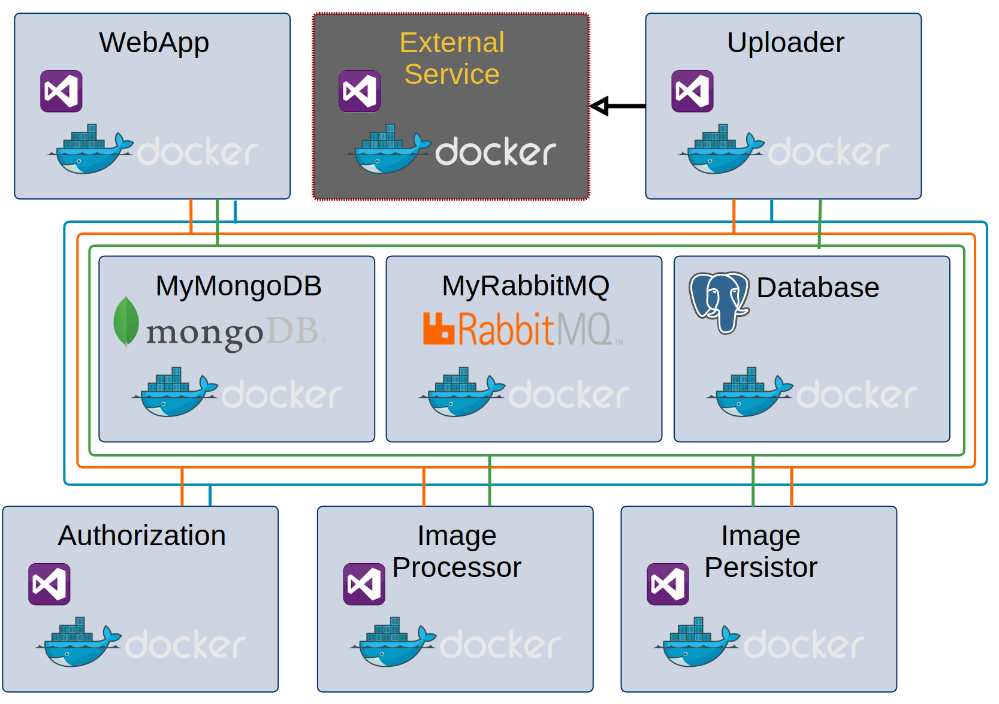

.net in the box
.NET User Group Leipzig
25.04.2017
Frank Pommerening

- Senior - Softwareentwickler
- Consultant
- Softwarearchitekt
frank@pommerening-online.de
Gründung: Mai 2012
Anzahl Mitarbeiter: 8 feste
Branchenfokus: Energiebranche
- Consulting (fachlich & IT)
- Requirements Engineering / Projektmanagement
- IT-Fachprozess-Analyse / Dokumentation
- Software-Entwicklung
- Microservices, SOA, REST, OOA und OOD
- Microsoft Technologien z.B. .NET (C#), WPF, WCF
- Datenbanken (MS SQL Server / Oracle / MongoDB)
Build .Net Core App

Build inside
Die Anwendung wird im Container während der Imageerstellung gebaut.| Vorteile | Nachteile |
|---|---|
|
|
Build outside
Die Anwendung wird unabhängig vom Container erstellt. Die entstandenen Artefakte werden bei der Imageerstellung kopiert.| Vorteile | Nachteile |
|---|---|
|
|
Containerfertige .Net (Core) App
Konfiguration / Einstellungen
- Einfache Implementierung in .NET Anwendung
- Gute Integration in Docker-Ökosystem
- Plattformabhängigkeit
- Support von verschiedenen Umgebungen: Entwicklung, Test und Produktion
| Ungeeignet | Alternativen |
|---|---|
| Registry | Zentrale Service-Discovery |
| Config-Dateien | Environment Variables |
Logging JA
Datei NEIN
Console JA
aber formatiert
Vorteile
- Kein Problem mit verteilte Umgebung
- Gute Integration ins Ökosystem
- Einfach zu implementieren
Microservice mit .net
- Verwendung eines gemeinsamen Basisimage
- Gleiche Version von .net und Abhängigkeiten für alle Serviceimages
- Geringere Build-Zeiten
- Infrastruktur-Container ggf. trotz Abhängigkeit noch nicht verfügbar (Reliability / Retry)
- Build outside bevorzugen
- Linux-Container besser auf Linux statt Windows-Host erstellen
Image-Workflow
Docker auf Raspberry PI 3
Build .net App
Die Unterstützung der ARM-Plattform für .net core ist noch in Entwicklung. Deshalb sollte man aktuell auf Mono von Xamarin / Microsoft zurückgreifen.Images die auf x86/x64 erstellt wurden, sind auf dem Raspberry nicht lauffähig!
Verwendung spezieller Basisimages erforderlich
- resin/rpi-raspbian
- resin/raspberrypi3-debian
- yyolk/rpi-archlinuxarm
- ioft/armhf-ubuntu
GitHub + Docker Hub
 Voraussetzungen:
Voraussetzungen:
- Accounts bei GitHub und Docker Hub existieren
- Quellcode inkl. Dockerfile ist in einem Repository auf GitHub vorhanden
Verbindung GitHub und Docker Hub
- Login bei Docker Hub
- Profil -> Setting -> Linked Accounts & Services

- Auswahl des Zugriffs

- Autorisierung des Zugriffs
- Bestätigung mit GitHub-Kennwort


Automatischer Build
- Login bei Docker Hub
- Create -> Create Automated Build
- Auswahl Herkunft Quellcode (GitHub oder Bitbucket)

- Auswahl des Quell-Repository

- Konfiguration Docker Hub-Repository
- Namespace (Fix: Benutzer)
- Name (Default: Name des GitHub-Repository)
- Sichtbarkeit (Default: Öffentlich)
- Kurzbeschreibung (Pflichtfeld)

- Anpassung Build-Einstellungen (Build-Settings)
- Pfad zum Dockerfile
- Definition Tags
- Verwendete Git-Branches

- Prüfung Build (Build Details)

.Net Client API
Quellcode: GitHub
Package: Nuget
Hinweis: Die Pakete werden nicht synchron mit den Änderungen am Quellcode veröffentlicht. Bestimmte Funktionen z.B. die Unterstützung für Swarm steht nur als Quellcode bereit.
Verbindungsaufbau
Für den Aufbau der Verbindung können verschiedene Protokolle z.B. Http oder Linux-Sockets verwendet. Letztes erlaubt auch die Verwendung in einem Container.Windows (Docker for Windows)
var client = new DockerClientConfiguration(new Uri(http://localhost:2375)).CreateClient();Linux (innerhalb eines Container)
var client = new DockerClientConfiguration(new Uri(unix://var/run/docker.sock)).CreateClient();docker run -d --privileged user/myimageAbfrage Images
var imageParams = new ImagesListParameters{ MatchName = "ubuntu" };
var images = await client.Images.ListImagesAsync(imageParams);Abfrage Container
var listParam = new ContainersListParameters
{
Filters = new Dictionary<string, IDictionary<string, bool>>
{
{"name", new Dictionary<string, bool> {{"pingtest", true}}}
}
};
var result = await client.Containers.ListContainersAsync(listParam)Container erstellen
Das Ergebnis der Erstellung enthält u.a. die vergebene Container-ID.Wichtig: Erstellte Container sind nicht gestartet.
var createParam = new CreateContainerParameters
{ Image = "ubuntu:latest",
Cmd = new List<string> {"echo", "hallo world"},
Name = "halloworldtest" };
var result = await client.Containers.CreateContainerAsync(createParam);Container starten
await client.Containers.StartContainerAsync(containerId, null);Container stoppen
await client.Containers.StopContainerAsync(containerId,
new ContainerStopParameters(), CancellationToken.None);Konfiguration des Webhook

- Login beim Docker Hub
- Auswahl des Repository
- Webhooks -> Create a Webhook
- Name und Ziel-URL festlegen
- Speichern